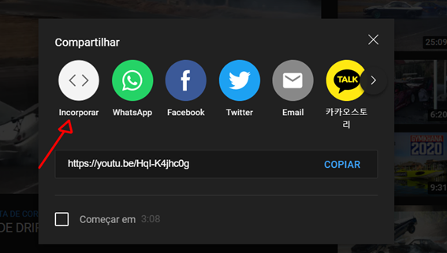

Esse video esta hospedado no meu proprio servidor/maquina.
<video controls width= "largura" poster="thumb do video.jpg" loop>
<source:src="caminho do video" type="tipo de arquivo.mp4, m4v, webm, ogg etc">
<source src="caminho do video" type="tipo de arquivo">
<Use sempre os videos de menor tamanho, para consumir menos banda da hospedagem, o navegador vai usar os demais arquivos , apenas se nao conseguir reproduzir o primeiro arquivo que adicionou>
</video>
h1>Inserindo videos hospedados localmente
Para adicionar um video hospedado no proprio site(Usa Seu plano de Banda), recomendado hospedar no Youtube ou vimeo
Basta adicionar a tag
Em:<video controls (mostra os controles do player) width="largura" poster="caminho da thumb"
SOURCE src="caminho do arquivo" type="tipo de arquivo" caso o navegador nao tenha compatibilidade ira abrir o source na ordem , o src="caminho do video" type="tipo de arquivo"
<video> controls width="500" poster="midia/thumb.jpg" loop >
source src="midia/video/Drift-mustang.mp4" type="video/mp4">
source src="midia/video/Drift-Mustang.m4v" type="video/m4v">
source src="midia/video/Drift-Mustang.webm" type="video/webm">
source src="midia/video/Drift-mustang.ogg" type="video/ogg">
p>Seu Navegador não tem compatibilidade com reprodução de vídeos.
</video>
Adicionando videos hospedado no YOUTUBE/vimeo
iframe width="500" height="315" src="https://www.youtube.com/embed/HqI-K4jhc0g" title="YouTube video player" frameborder="0" allow="accelerometer; autoplay; clipboard-write; encrypted-media; gyroscope; picture-in-picture" allowfullscreen> /iframe>
Para adicionar um video hospedado no youtube, basta procurar o botao de Incorporar, la ja fica o codigo pronto do video escolhido
